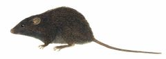
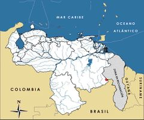

Podoxymys roraimae
| Ratón del Roraima | |
|---|---|
|  | |
| Riesgo de extinción | |
 En peligro (UICN) | |
| Clasificación científica | |
| Reino: | Animalia |
| Filo: | Chordata |
| Clase: | Mammalia |
| Orden: | Rodentia |
| Familia: | Cricetidae |
| Género: | Podoxymys |
| Especie: | Podoxymys roraimae |
| Nombre binomial | |
|
Podoxymys roraimae Anthony, 1929 | |
| Distribución | |
|
 Mapa de distribución de Podoxymys roraimae | |
Contenido
Información de Evaluación
- Categoría y Criterio Regional: En Peligro B1ab(iii)
- Fecha de Evaluación Regional:2015
- Evaluadores: Jesús Morales-Campos y Ariany García-Rawlins
- Categoría y Criterio Global:Vulnerable D2
Justificación
Evaluaciones Previas
1999: Menor Riesgo-Preocupación Menor (Actualmente conocida como LC)
2008: Vulnerable (VU)
Información General
Nombres comunes
Ratón del Roraima, ratoncito rostrilargo del Roraima, Roraima mouse.
Notas taxonómicas
Sinónimos
Descripción
Ratón terrestre de tamaño pequeño, cuya longitud desde la cabeza hasta la base de la cola es de siete a diez centímetros. Su pelaje tiene una coloración negra grisácea, con tonos pardos a casi negros, y es suave, largo y más corto en la cabeza. El vientre es de igual coloración que el dorso, pero con las puntas de los pelos más pardas, oscuras y brillantes. Patas y cola desnudas, de color marrón grisáceo, siendo esta última tan larga como el cuerpo, con longitudes entre 7,8 y 10,2 cm. Su rostro es muy alargado con ojos y orejas bastante pequeñas, redondeadas, finamente peludas, que podrían denotar hábitos semifosoriales. Vibrisas muy finas y cortas, que no llegan a las orejas. Patas con uñas en proporción muy largas, en especial las anteriores, lo que indica hábitos excavadores (Anthony 1929, Eisenberg 1989, Pérez-Zapata et al. 1992, Linares 1998). De hábitos nocturnos, su dieta es probable que esté compuesta por insectos, lombrices de tierra y materia vegetal (Linares 1998).
Distribución
Su distribución conocida estuvo restringida hasta el año 2009 a la cumbre del Cerro Roraima en el Escudo Guayanés, donde convergen las fronteras de Brasil, Guyana y Venezuela, con ejemplares registrados solo en el sector venezolano (Anthony 1929). El género fue descrito en 1929 y en 1989 se capturó un individuo adicional en su localidad típica, la cumbre del Roraima a 2600 m de altura (Anthony 1929, Pérez-Zapata et al. 1992, Linares 1998). Un séptimo ejemplar se obtuvo en 2009 a 2216 m de elevación, en la cima del Wei-Assipu tepui (Carreño et al. 2002), también conocido como la «Pequeña Roraima», un tepui menor de la cadena oriental, situado tan solo a 2 km en línea recta del extremo noreste del tepui Roraima, justo en la frontera entre Brasil y Guyana (Leite et al. 2014, R. Guerrero com. pers.). Su área total de distribución potencial en la actualidad se restringe a la superficie estimada de 43 km2 de la cumbre del Roraima y apenas 3 km2 de la cima del Wei-Assipu tepui (D. Lew obs. pers., R. Guerrero com. pers.). Su hábitat está dominado por bosquecillos tepuyanos húmedos de Bonnettia roraimae, de suelo recubierto por abundantes líquenes (Cladonia spp.) y musgos (Sphagnum spp.) (Pérez-Zapata et al. 1992, Linares 1998, J. Ochoa-G. com. pers.); el ambiente donde fue capturado el ejemplar de Wei-Assipu tepui fue referido como matorral y herbazal alto tepuyano (Carreño et al. 2002). Las grandes extensiones rocosas desprovistas de vegetación que dominan el paisaje de estos tepuyes, permite suponer que la superficie efectiva de hábitat disponible para la especie es bastante inferior a la extensión antes referida para estas mesetas.
- Sistema: Terrestre
- Bioregión:
- Intervalo altitudinal (m): 1500-2000
- Endémica: Sí
Situación
Es la única especie del género Podoxymys y su cariotipo presenta solo 16 pares de cromosomas (Pérez-Zapata et al. 1992). Recientes análisis con base en ADN mitocondrial y nuclear permiten afirmar que Podoxymys pertenece a la tribu Akodontini (Sigmodontinae), de modo estrecho relacionado con Thalpomys y Necromys, dos taxones distribuidos en el macizo o meseta brasileña (Carreño et al. 2002). Es uno de los mamíferos más escasos y restringidos en cuanto a su distribución geográfica, endémico solo de dos mesetas tepuyanas. En éstas se estima que esté presente en una extensión de hasta 183,42 km2, y que ocupe un área de hasta 103,36 km2. Es una especie poco común y de baja frecuencia de captura; los intentos recurrentes de muestreo de roedores en el Roraima han resultado únicamente en numerosas capturas de Rhipidomys macconnelli (R. Guerrero, com. pers.).
- EOO (km2): 183,42
- AOO (km2): 103,36
- Tendencia Poblacional: Desconocida
Amenazas
El hábitat primario de la especie todavía se encuentra más o menos bien conservado. Sin embargo, la cima del monte Roraima es el ambiente altotepuyano más visitado por turistas en Venezuela, por lo cual existe un alto potencial de perturbación y contaminación, que incluye la extracción de minerales, como el cuarzo, y madera para leña (causantes de ocasionales incendios de vegetación), hasta la remoción de plantas ornamentales nativas. La presencia no controlada de turistas impacta extensas áreas por pisoteo de vegetación, traslado de piedras para construcción de veredas de excursionismo, acumulación de desechos sólidos e introducción de especies alóctonas (en particular de plantas). También se han señalado prácticas de biopiratería de plantas promisorias y extracción de otras con fines ornamentales, como las carnívoras de los géneros Heliamphora y Drossera, bromelias, orquídeas, además de mariposas y aves para tráfico ilegal (Linares 1998, Lentino et al. 2005, R. Guerrero com. pers., J. Ochoa-G. com. pers.).
Conservación
No existen medidas específicas para su conservación. Su hábitat está protegido formalmente por la figura de monumento natural (Venezuela 1991), pero al mismo tiempo el monte Roraima es uno de los atractivos principales del turismo en la Gran Sabana. Para asegurar la conservación de éste y otros endemismos tepuyanos, se recomienda la regulación estricta del turismo a fin de minimizar el impacto humano sobre ecosistemas tan frágiles y singulares como los altotepuyanos. Sería de utilidad evaluar su distribución, abundancia y ecología en Roraima e incrementar el radio de exploración de su presencia en tepuyes cercanos, para poder definir su estatus de conservación con mayor precisión.
Autoría
Autores originales
Daniel Lew y Juhani Ojasti
Colaboradores
Ilustrador
Víctor Pérez
Referencias
- Anthony, H. E. (1929). Two new genera of rodents from South America. American Museum Novitates 383: 1-6.
- Carreño, R., Nolla, J. y Astort, J. (2002). Cavidades del Wei-Assipu-tepui, Macizo del Roraima, Brasil. Boletín de la Sociedad Venezolana de Espeleología 36: 36-45.
- Eisenberg, J. F. (1989). Mammals of the Neotropics. The Northern Neotropics (Vol. 1). Panamá, Colombia, Venezuela, Guyana, Suriname, French Guiana. University of Chicago Press. Chicago y Londres. 449 pp.
- Leite, L. R. Y., Kok, P. J. R. y Weksler, M. (2014). Evolutionary affinities of the 'Lost World' mouse suggest a late Pliocene connection between the Guiana and Brazilian shields. Journal of Biogeography 42: 706-715.
- Lentino, M., Esclasans, D. y Medina, F. (2005). Áreas importantes para la conservación de las aves en Venezuela. Páginas: 621-730. En: BirdLife International y Conservation International (Eds.). Áreas importantes para la Conservación de las aves en los Andes tropicales: sitios prioritarios para la conservación de la biodiversidad. BirdLife International (Serie de conservación de BirdLife No. 14) & Soc. Audubon de Venezuela, Caracas. Quito, Ecuador.
- Lew, D. y Ojasti, J. (2015). Ratón del Roraima, Podoxymys roraimae. En: J.P. Rodríguez, A. García-Rawlins y F. Rojas-Suárez (eds.) Libro Rojo de la Fauna Venezolana. Cuarta edición. Provita y Fundación Empresas Polar, Caracas, Venezuela. Recuperado de: animalesamenazados.provita.org.ve/content/raton-del-roraima
- Linares, O. J. (1998). Mamíferos de Venezuela. Sociedad conservacionista Audubon. Caracas. 691 pp.
- Pérez-Zapata, A., Lew, D., Aguilera, M. y Reig, O. A. (1992). New data on the systematics and karyology of Podoxymus roraimae (Rodentia, Cricetidae). Zeitschrift für Säugetierkunde 57: 216-224.
- Rodríguez, J. P. y Rojas-Suárez, F. (1999). Libro Rojo de la Fauna Venezolana, segunda edición. PROVITA, Fundación Polar. Caracas. 444 pp.
- Rodríguez, J. P. y Rojas-Suárez, F. (Eds.) (2008). Libro Rojo de la Fauna Venezolana, tercera edición. Provita y Shell Venezuela, S. A. Caracas, Venezuela. 364 pp.
- Venezuela. (1991). MAC. Resolución Nº DGSPA/247 del 14/08/91: Veda general para la captura del botuto o guarura (Strombus gigas) [Derogada]. Ministerio de Agricultura y Cría (MAC). En: Gaceta Oficial Nº 34.777 (15 ago. 1991). Caracas, Venezuela.